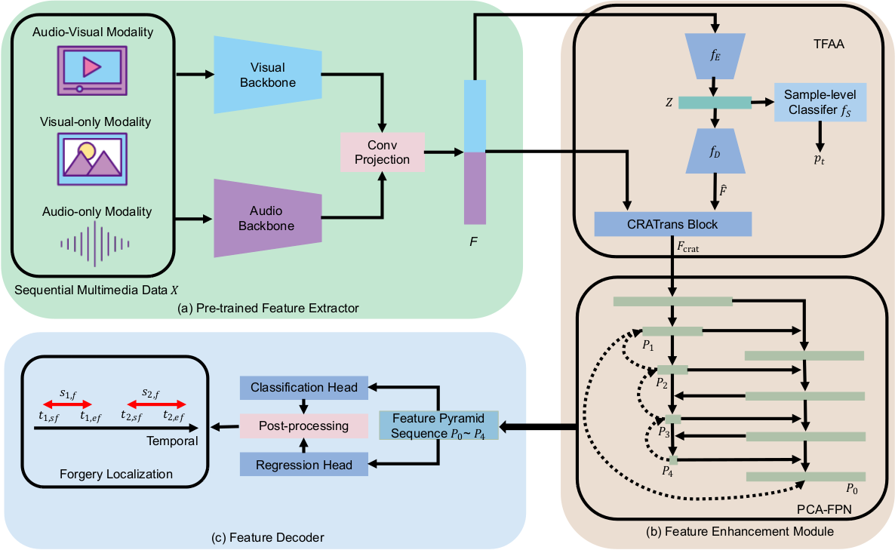
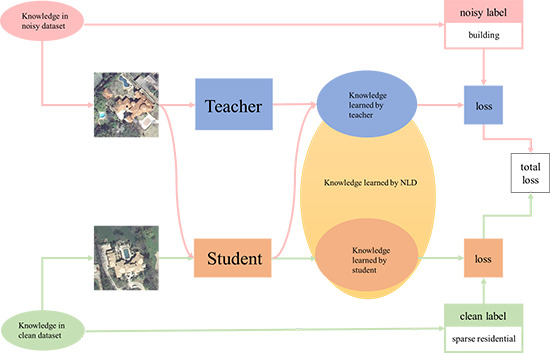

Rui Zhang (张瑞)Phd Student, SCU
School of Cyber Science and Engineering,
|
 |
News
|
About Me
I am currently an Phd Student at School of Cyber Science and Engineering, Sichuan University from 2021, supervised by Prof. Hongxia Wang.
I received my Master degree from The Institute of Optics And Electronics, University of Chinese Academy of Science in 2021 and my bachelor degree from School of Electronic Information Engineering, Inner Mongolia University in 2018.
My current research focuses on DeepFake Detection, Video Temproal Forgery Detection and Fake News Detection.
Biography
Submitted Papers
|
GIGA: Geometric Information Graph Analysis for Face Forgery Detection Rui Zhang, Hongxia Wang, Hangqing Liu, Yang Zhou, Qiang Zeng |
Publications
|  |
UMMAFormer: A Universal Multimodal-adaptive Transformer Framework For Temporal Forgery Localization Rui Zhang, Hongxia Wang, Mingshan Du, Hanqing Liu, Yang Zhou, Qiang ZengACM International Conference on Multimedia (ACM MM), 2023. [arXiv] [Code] |
| | |
|  |
Remote Sensing Image Scene Classification with Noisy Label Distillation Rui Zhang, Zhenghao Chen, Sanxing Zhang, Fei Song, Gang Zhang, Quancheng Zhou, Tao LeiRemote Sensing, 2020. [Paper] [Code] |
| |
Unique visitors since Jul 2023